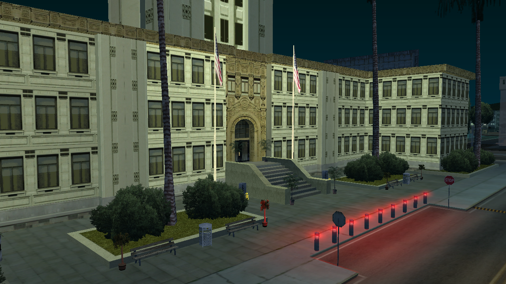
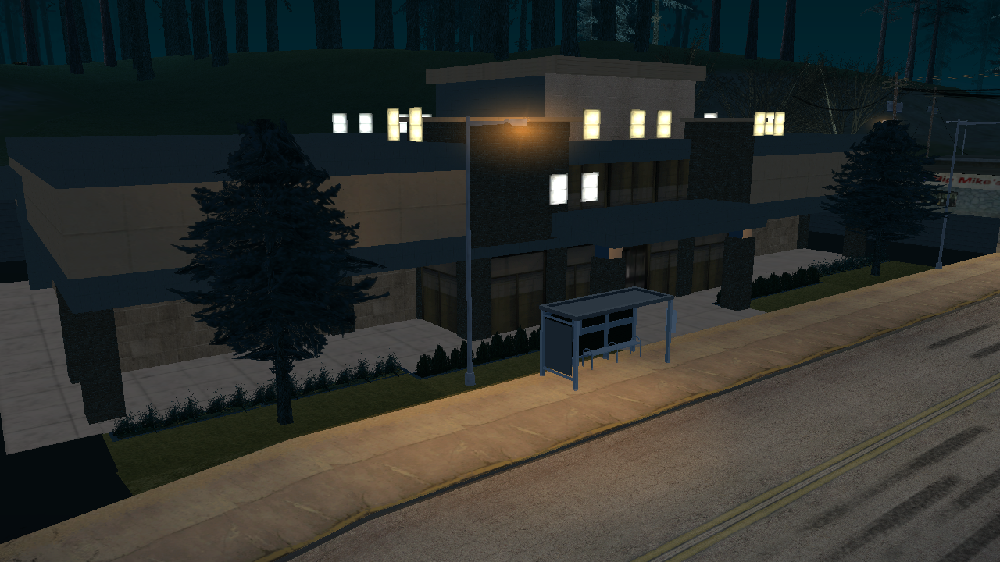
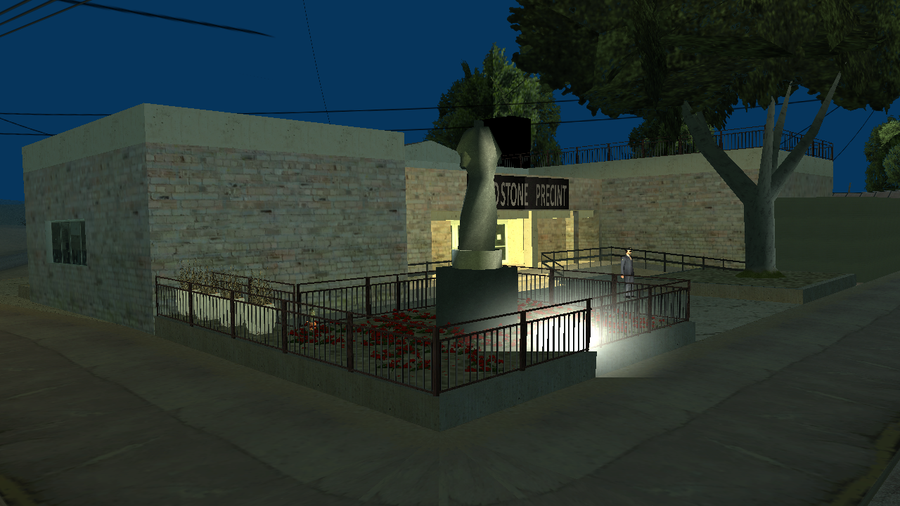

Mengenal Lebih Dekat Markas Kepolisian San Andreas

UNIT 01
Terletak di pusat administrasi Los Santos, Central HQ merupakan jantung dari seluruh operasi SAPD. Dilengkapi dengan fasilitas sel tahanan tingkat tinggi, ruang interogasi modern, dan pusat pemantauan CCTV seluruh kota.

UNIT 02
Menjaga keamanan di wilayah utara dan Red County. Station ini menjadi garda terdepan untuk patroli hutan dan wilayah perbukitan, serta menangani kasus-kasus kriminalitas di area rural/pedesaan.

UNIT 03
Beroperasi di lingkungan ekstrem gurun Bone County. SandStone Station fokus pada patroli jalur udara, keamanan perbatasan (border patrol), dan pengejaran kecepatan tinggi di jalur bebas hambatan (highways).